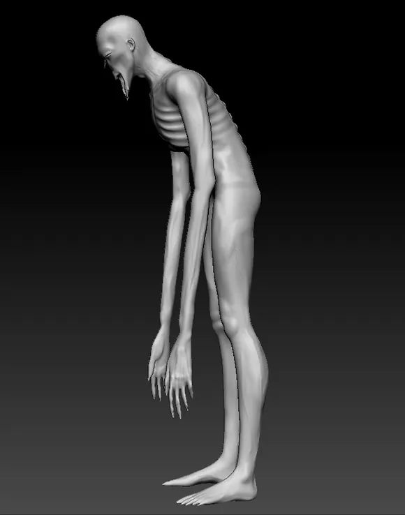
Projet Red Wall
Flasgar
ZBrush
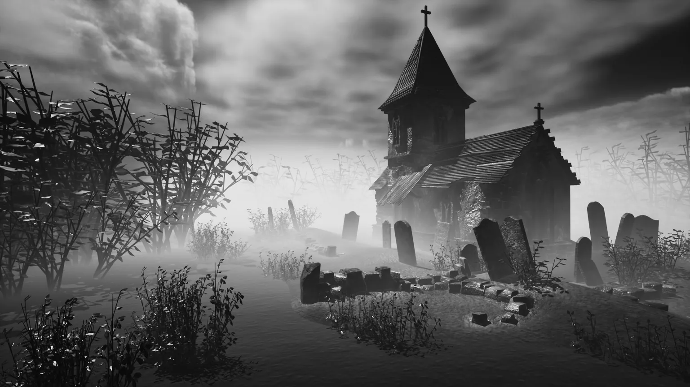
Portfolio — Artiste 3D
Personnages, créatures et environnements pour le jeu vidéo et l'image. De la sculpture à l'éclairage final : ZBrush, Maya, Substance Painter, Unreal Engine.
01 — En mouvement
Un aperçu animé des projets : sculptures, environnements et rendus moteur.
02 — Sélection
Douze projets, de l'exercice de sculpture à l'environnement complet monté sous moteur. Cliquez sur une image pour ouvrir la galerie.

Projet Red Wall
ZBrush
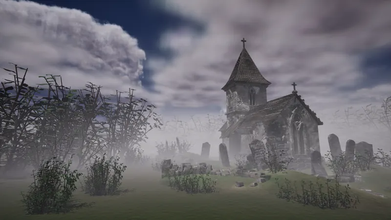
Environnement complet
Maya · Substance Painter · Unreal Engine
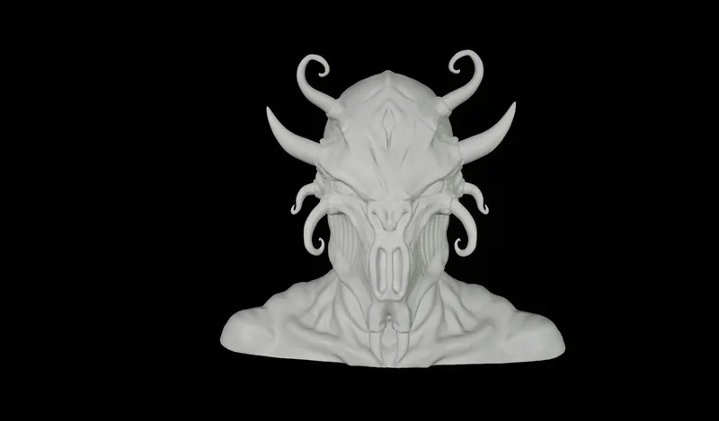
Sculpture
ZBrush
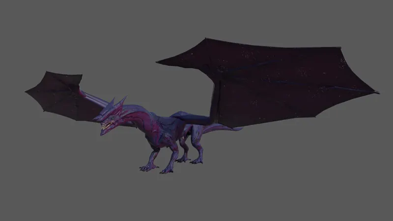
Texturing
Substance Painter
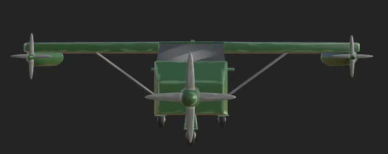
Game jam — octobre 2025
Maya · Substance Painter
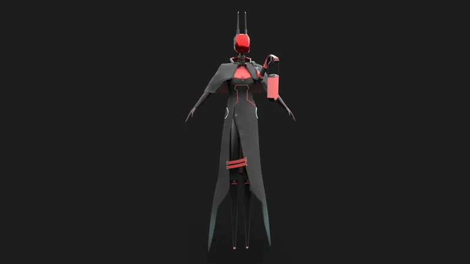
Character design
Modélisation 3D
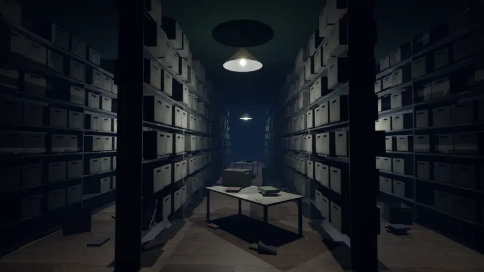
Environnement d'intérieur
Unreal Engine
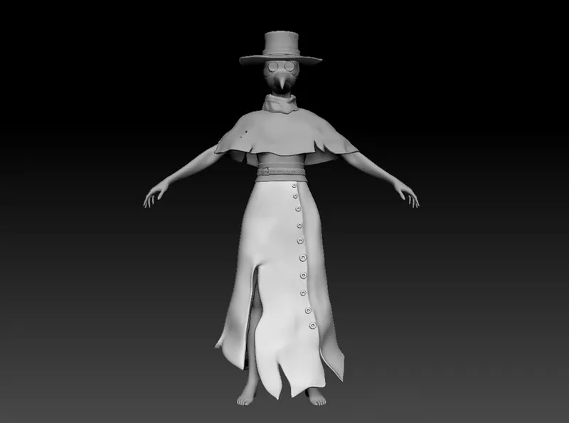
Exercices de character art
ZBrush
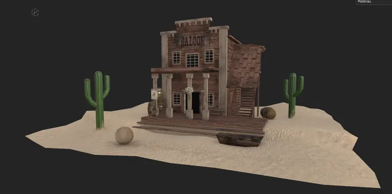
Exercices d'environnement
Maya · Substance Painter
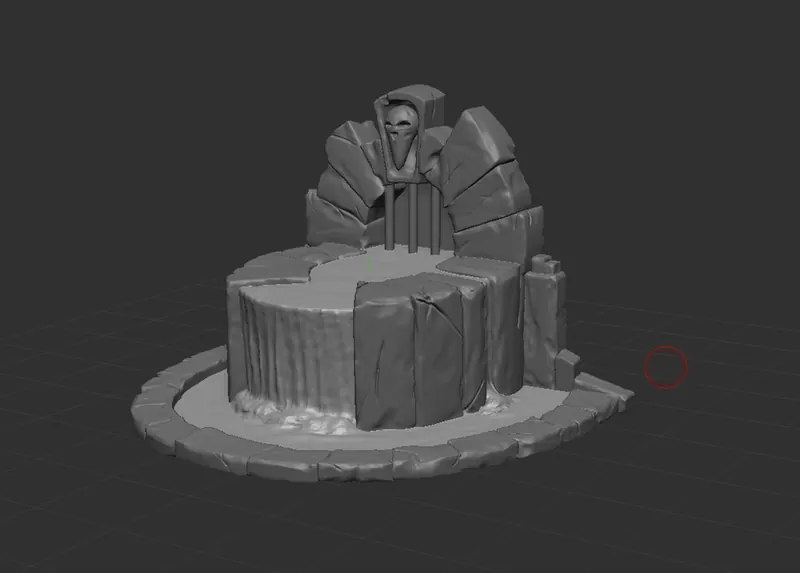
1 h 30 – 2 h par pièce
ZBrush
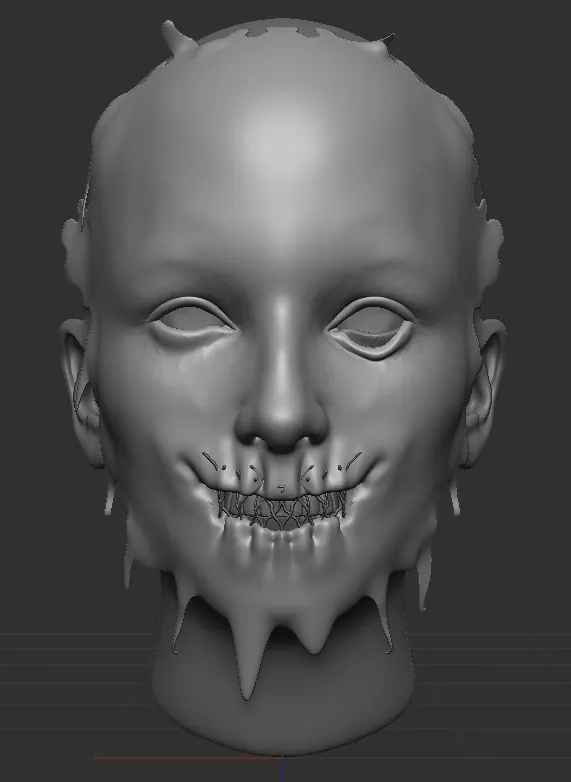
Exercices de sculpture
ZBrush
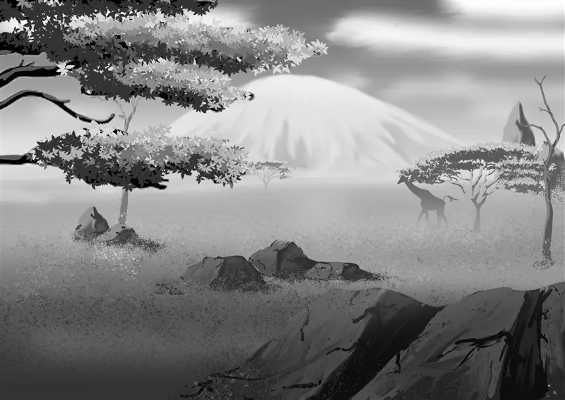
Illustration 2D
Dessin numérique
Aucun projet dans cette catégorie.
03 — Profil
Je sculpte des créatures et je construis des lieux qui mettent mal à l'aise.
Mon travail tourne autour du personnage et de l'environnement, avec une nette préférence pour l'horreur et le fantastique sombre : silhouettes lisibles, anatomies détournées et éclairages qui laissent le reste à l'imagination.
Je prends les projets du début à la fin — recherche de forme sous ZBrush, modélisation propre sous Maya, texturing dans Substance Painter, puis assemblage et éclairage sous Unreal Engine. J'interviens aussi en renfort sur le seul texturing, comme sur le dragon modélisé par Clément Mona.
Récemment : le monstre Flasgar pour la série d'horreur Red Wall, et l'avion du jeu Pilote du ciel maudit, réalisé pendant la game jam d'octobre 2025 sur le thème CURSED.
04 — Disponibilité
Ouverte aux collaborations, aux missions freelance et aux opportunités en studio.